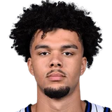

“They’re at the right age where they still young, but they, they young enough to dare. Dare to be great. And I, I believe like Paolo and Franz is going to be great, but Desmond Bane, Jalen Suggs, Anthony Black, we got Tyus Jones. Now we got, we got so many great players. “And they all right. And I feel like right now they all are ready to make their mark. So I’m just happy and honored to be a part of it.”

What NBA players and coaches have said about Tyus Jones
6 quotes about Tyus Jones from 5 players, coaches and executives, newest first. Each one links to its original source.
Best quotes
Devin Booker on Tyus Jones picking his spots to attack:
“I mean, he mastered that in like 6th grade. I keep telling you all that, so I've watched him be super punctual since then. He's always had a pace and a feel, and his scoring's always been underrated.”
“I want to say Tyus Jones has been the one who really helped me during the tough times at the beginning of the season when I was not sure about why I was not playing and worried about what I needed to be on the court,”

Noah Penda on Tyus JonesResponsible GamingWhat Tyus Jones has said about other players and coaches →
Quotes per season
Who talks about Tyus Jones most
 Devin Booker on Tyus Jones2 quotes
Devin Booker on Tyus Jones2 quotes Flip Saunders1 quote
Flip Saunders1 quote God Shammgod1 quote
God Shammgod1 quote Mike Budenholzer1 quote
Mike Budenholzer1 quote- Noah Penda1 quote
Back and forth
- Tyus Jones and Devin Booker4 quotes
- Tyus Jones and Flip Saunders2 quotes
2025-26
2 quotes“I want to say Tyus Jones has been the one who really helped me during the tough times at the beginning of the season when I was not sure about why I was not playing and worried about what I needed to be on the court,”
Noah Penda on Tyus JonesResponsible Gaming
“They’re at the right age where they still young, but they, they young enough to dare. Dare to be great. And I, I believe like Paolo and Franz is going to be great, but Desmond Bane, Jalen Suggs, Anthony Black, we got Tyus Jones. Now we got, we got so many great players. “And they all right. And I feel like right now they all are ready to make their mark. So I’m just happy and honored to be a part of it.”
2024-25
3 quotesDevin Booker on Tyus Jones picking his spots to attack:
“I mean, he mastered that in like 6th grade. I keep telling you all that, so I've watched him be super punctual since then. He's always had a pace and a feel, and his scoring's always been underrated.”
Mike Budenholzer on Tyus Jones being aggressive:
“We've probably just gotta stay on him and be in his ear more. The more aggressive he is, I think, the better we are as a team.”
Devin Booker on the Suns adding Tyus Jones:
“We can say it how it is: We got him for a steal. I remember the news broke when we were at [Team] USA, and all the guys in the locker room were like, 'Man, how did y'all get that done?'”
2014-15
1 quoteAndy Greder:Flip Saunders on Tyus Jones trade:
“(Cleveland) called back with about two minutes on the clock, and that's basically when we cut a deal.”